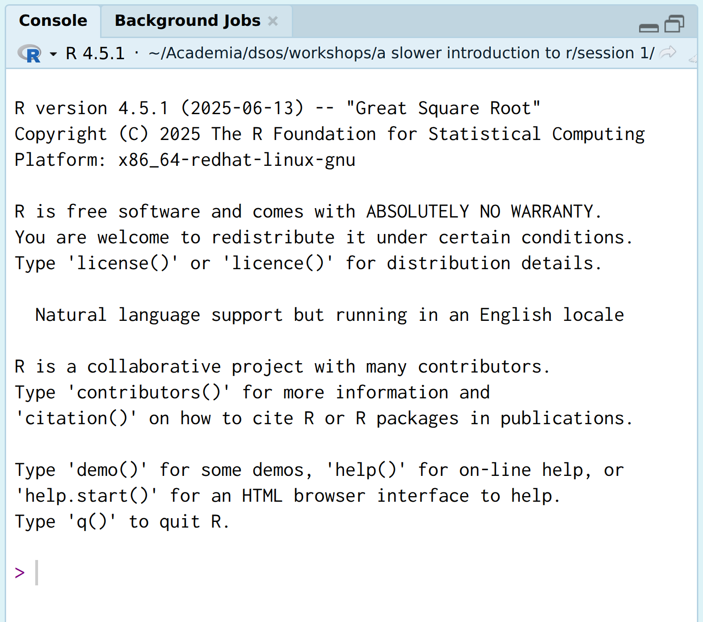
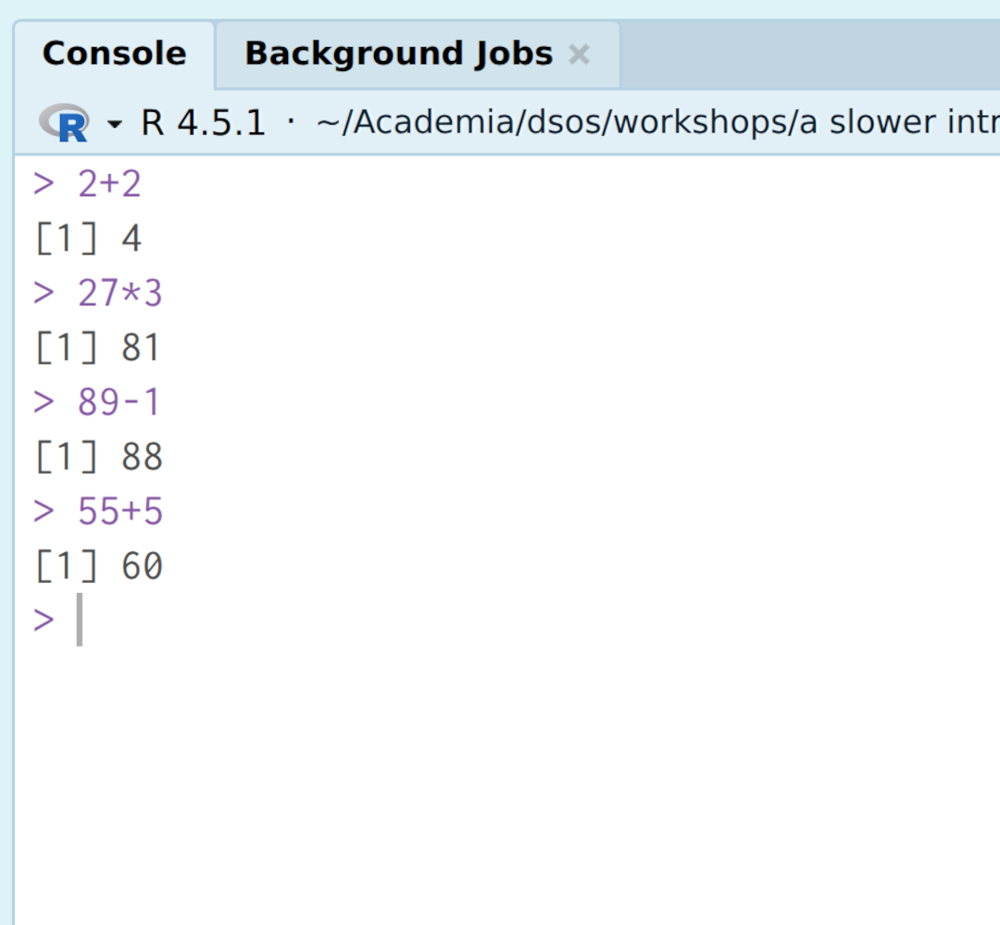
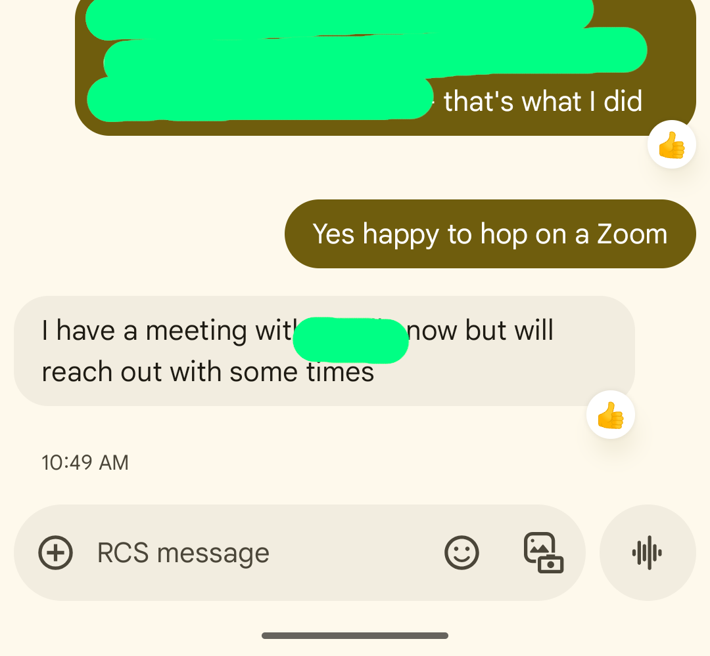
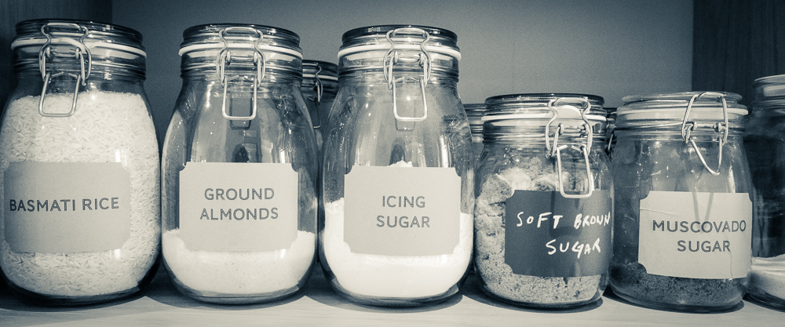

> 32*27
[1] 864Session 1: How can I do math?
A Slower Introduction to R
Yea-Hung Chen, PhD, MS
UCSF Library
Thursday, October 9, 2025
RStudio’s panes
RStudio’s panes

The console

>) is called a prompt (“it’s your turn”), and is a space for you to write messages to your computer.The console is like a message thread


The console is like a message thread
- code = messages you write to your computer
- output = messages you receive from your computer
R versus RStudio
- roughly speaking, you can think of R as being the console
- RStudio is the other panes and other features
RStudio’s panes
RStudio’s panes
- you can rearrange the panes if you wish: Tools > Global Options > Pane Layout
Exercise 1
Exercise 1
- What is a common term for the
>symbol in the R console? - Does the term “output” refer to messages you write to your computer, or to messages your computer writes to you?
- How many panes are there in RStudio?
Mathematical operators
Math
- what is 32 plus 27?
Math in R
- what is 32 times 27?
- we can find the solution using the R console:
- the asterisk (
*) indicates multiplication - it is an example of a mathematical operator
Mathematical operators
^for exponentiation*for multiplication/for division+for addition-for subtraction
Parentheses
- we can combine operators using parentheses:
Order of operations
- your computer will use the standard operator of operations, known as PEMDAS in the United States (or BODMAS in the United Kingdom)
Example: an average
- suppose that Bob has his systolic blood pressure measured twice
- first measurement = 125 mmHg
- second measurement = 132 mmHg
- what was his average measurement of systolic blood pressure?
Example: the area of a circle
- a circle has a radius of 2.15 feet
- what is the area of the circle?
piis a special value that is built in to R
Spaces
- it is fine to include spaces (and it’s common practice)
Extra parentheses
- it’s fine to include extra parentheses
Exercise 2
Exercise 2
- Type,
3-in the console and press the return/enter key on your keyboard. Press return/enter key again and again and again. Notice that the console is displaying a+sign rather than the usual>symbol. The+sign indicates that your computer thinks you’re not done with your instruction. It’s occurring here because3-suggests an incomplete instruction to do subtraction. To complete the instruction, type in any number (for example,19). You should see the prompt again.
Exercise 2
- Type
3-in the console again and press return/enter key on your keyboard. Press return/enter key again and again and again. Notice the+signs. This time, press the escape (esc) key on your keyboard to cancel the instruction. You should see the prompt again.
Exercise 2
- Suppose that there are three siblings, with heights of 5’ 3”, 5’ 8”, and 5’ 6”. Find the average height of the siblings, in inches, by adding the three heights and dividing by 3. Try to do this all in one line, without using any mental math.
Mathematical functions
Example: square root
- what is the square root of 81?
sqrt: the name of an R function (more on this in a moment), indicating that we want to take the square root of a number- the parentheses: a space to put the number in
81: the number we want the square root of
What are functions?
- you can think of functions as requests (“hi computer, please do this”)
- for example, you can think of this imaginary function:
How do I use functions?
- when using functions in R, you must include both parentheses
- like passwords, functions are case sensitive (for example,
elephant≠ELEphaNT)
Some mathematical functions
sqrt()for square rootsabs()for absolute valuesexp()for powers of \(e\) (I don’t expect you to know what this is)
Examples
Exercise 3
Exercise 3
- Thinking about pattern recognition, what do you notice as differences between mathematical operators and mathematical functions?
Object assignment
Example: systolic blood pressure
- a common upper threshold for “normal” systolic blood pressure is 120 mmHg
- suppose that in one specific morning, a clinic sees 3 hypertensive patients
- their measurements of systolic blood pressure are 152, 148, and 135 mmHg
- how much higher than the threshold is each measurement?
Example: systolic blood pressure
Example: systolic blood pressure
- I’ve written
120over and over again - this is a little bit tedious and introduces the possibility of human error
- a solution is to store the number
Object assignment
120: a number I want to store<-: a left arrow, indicating that I want to store the numbernormal_systolic_upper: a name that I picked that I can use to refer to the number
The jar analogy

The jar analogy
120: what I want to put in a jar<-: the action of putting something in a jarnormal_systolic_upper: a label that I place on the jar
Terminology
- the “jar” (
normal_systolic_upperin this example) is known as an object - the process of putting something in a jar is known as object assignment
Object names
- object names are case sensitive
- object names should begin with a letter (there are ways around this)
- object names can include
_or.
Object retrieval
Math with objects
The c() function
- we can make this more efficient by writing the 3 measurements in one vector using the
c()function:
- a vector is a set of values
- we’ll talk more about this next week!
The c() function
- we can subtract
normal_systolic_upperfrom the vector of measurements:
normal_systolic_uppergets subtracted from each value of the vector
Can I use the equal sign instead?
- yes:
- I never use it, for a couple of reasons…
- but you are welcome to use the equal sign for object assignment if you want to
Can I replace objects?
- yes, and notice that your computer will not warn you about it:
What’s so great about object assignment?
- object assignment is very powerful
- you can use it to clean data, for example
- next week, we will load a data file into R using object assignment
Exercise 4
Exercise 4
A common upper threshold for “optimal” LDL cholesterol is 100 mg/dL. Store this value using object assignment, giving the object some arbitrary name, like
LDL.cutorldl_optimal_upper.Retrieve the object at the console, to verify that the object assignment worked.
Use the object you defined to calculate how much higher a measurement of 162 mg/dL is than the optimal threshold.